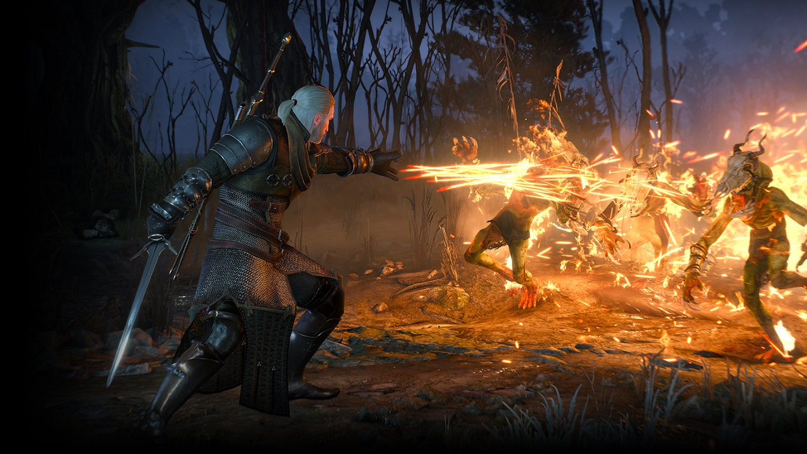
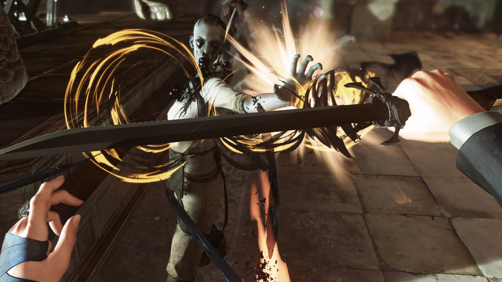
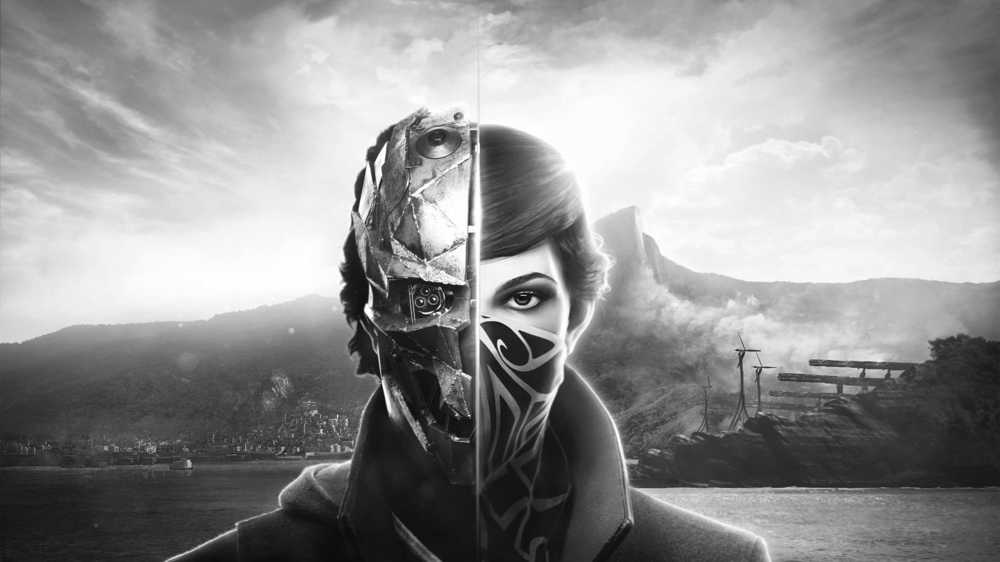
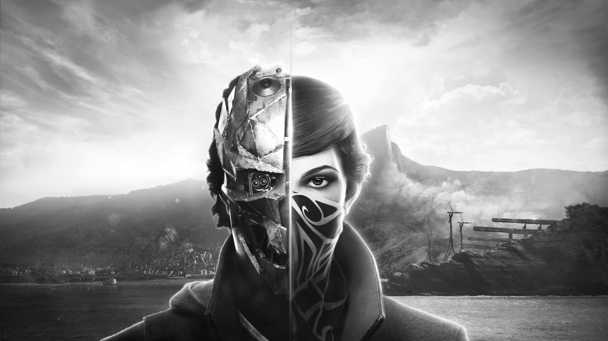

THE GAMES

In the epic sequel to the award-winning Middle-earth: Shadow of Mordor, go behind enemy lines to forge an army, conquer Fortresses and dominate Mordor from within. Experience how the award winning Nemesis System creates unique personal stories with every enemy and follower, and confront the full power of the Dark Lord Sauron and his Ringwraiths in this epic new story of Middle-earth..
In a war-torn world, with the Wild Hunt on your back, you’ll take on your most important contract -- to track down the child of prophecy, a key and a weapon which can save or destroy all.


As fully voiced characters, Emily Kaldwin and Corvo Attano now bring their own perspectives and emotional responses to the world and story. Use each character’s set of powers, gadgets and uniquely-tuned weapons in creative ways as you explore the world – whether you fight your way through the city streets or sneak across the rooftops - and which enemies you decide to eliminate or spare.
 
